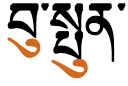
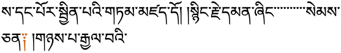

This page gathers basic information about the Tibetan script and its use for the Tibetan language. It aims (generally) to provide an overview of the orthography and typographic features, and (specifically) to advise how to write Tibetan using Unicode. The main focus is the Standard Tibetan used in Lhasa, but some information is also provided about use of the script for Sanskrit.
Phonetic transcriptions on this page should be treated as an approximate guide, only. Many are more phonemic than phonetic, and there may be variations depending on the source of the transcription.
The Tibetan script is used for writing the Tibetan, Dzongkha, Ladakhi and Sikkimese languages, spoken in Tibet, Bhutan, Nepal and India. It is also used for transcribing religious Sanskrit texts.
While the exact origin of the script is not clear (other than that is a derivative of the Brahmi script), tradition says that it was developed by Thonmi Sambhota after a visit to India in the mid-7th century to study the art of writing.
The creation of the Tibetan alphabet is attributed to Thonmi Sambhota of the mid-7th century. Tradition holds that Thonmi Sambhota, a minister of Songtsen Gampo (569-649), was sent to India to study the art of writing, and upon his return introduced the alphabet. The form of the letters is based on an Indic alphabet of that period.
Tibetan is an abugida, ie. consonants carry an inherent vowel sound a that is overridden using vowel signs. See the table to the right for a brief overview of features for the modern Tibetan orthography.
There are various different Tibetan scripts, of two basic types: དབུ་ཅན་dbu␣ʧn␣(dbu can), pronounced uchen (with a head), and དབུ་མེད་dbu␣med␣(dbu med), pronounced ume (headless). This page concentrates on the former. Pronunciations are based on the central, Lhasa dialect.
Historically, Tibetan text was written on loose-leaf sheets called pechas, དཔེ་ཆ་dpe␣ʧʰ␣(dpe cha). Some of the characters used and formatting approaches are different in books and pechas.
Tibetan text runs left to right in horizontal lines.
Words are not separated, however, Tibetan ends all syllables using a tsek mark.
To write the sounds of the standard Lhasa dialect, Tibetan uses 30 consonant letters (plus their subjoined forms). 6 more letters are used to write Sanskrit.
A distinguishing feature of Tibetan is the set of separate code points for subjoined consonants, used to create consonant stacks. Of the 77 combining characters in the Tibetan block, 48 represent subjoined consonant forms. There is no virama for normal Tibetan writing.
Tibetan orthographic syllables tend to include a stack and additional consonants to either side of the root consonant, typically to qualify or modify the root value, but also for syllable-final consonant sounds. The actual pronunciation is usually much more simple than a transliteration would suggest.
A syllable with an initial stack of three consonants plus a vowel sign.
Tibetan consonant letters have an inherent vowel. When writing the Lhasa dialect, other vowels are represented using 4 vowel-signs. All vowel-signs are combining marks, and there are no prescript, circumgraph, or composite vowels.
Sanskrit vowels written in Tibetan use additional vowel-signs and combining marks, some of which represent diphthongs, and some of which form circumgraphs or composite characters, depending on the encoding.
Tone is not explicitly indicated in the orthography.
Modern Tibetan writing uses few punctuation or symbols, but the Tibetan script block in Unicode contains many of these.
Tibetan has its own set of numbers.
Character lists show:
Character index
The index points to locations where a character is mentioned in this page, and indicates whether it is used by the Lhasa Tibetan orthography described here.
These sounds are for the modern Lhasa dialect of Tibetan.
Click on the sounds to reveal locations in this document where they are mentioned.
Phones in a lighter colour are non-native or allophones. Source Wikipedia.
Vowel sounds
Plain vowels
Diphthongs
Consonant sounds
labial
dental
alveolar
post-
alveolar
retroflex
palatal
velar
glottal
stop
p pʰ
t tʰ
ʈ ʈʰ
c cʰ
k kʰ
ʔ
affricate
t͡s t͡sʰ
t͡ɕ t͡ɕʰ
ʈ͡ʂ ʈ͡ʂʰ
fricative
s
ʂ
ɕ
h
nasal
m
n
ɲ
ŋ
approximant
w
lɹ
ɹ̥l̥
jʎ
trill/flap
Tibetan vowels
Inherent vowel
a following a consonant is not written, but is seen as an inherent part of the consonant letter, so ka is written by simply using the consonant letter ཀ [U+0F40 TIBETAN LETTER KA].
Standard Tibetan has only 5 vowels, including the inherent vowel, and so only 4 vowel-signs.
ི␣ུ␣ེ␣ོ
Tibetan vowel-signs are all combining characters. All vowel-signs are stored after the base consonant or consonant stack, and the font puts them in the correct place for display.
The Lhasa dialect has no prescript vowels, circumgraphs, or spacing marks.
Consonants with no following vowel
The inherent vowel is not normally pronounced at the end of a word.
Word-internally, consonants with no intervening vowel are stacked (see stacking).
Standalone vowels
འ[U+0F60 TIBETAN LETTER -A] (called འ་ཆུང་à␣ʧʰuŋ␣('a chung)) and ཨ[U+0F68 TIBETAN LETTER A] (called ཨ་ཆེན་ạ␣ʧʰen␣(a chen)) represent the phoneme a. In the Lhasa dialect, the former has a high and the latter a low tone.
Other standalone vowels are written by attaching vowel-signs to one or other of these, depending on the tone.
Other uses of A-chung
འྰ␣ཨྸ
'A-chung can also represent a nasal, so མཚམས་mʦʰms␣ (mtshams)boundaryམཐུན་mtʰun␣agreement are often written འཚམས་ and འཐུན་.
'A-chung may also nasalise the juncture of two morphemes, eg. དགེ་འདུན་dge␣àdun␣ (dge 'dun)ɡenyn
Other than loanwords, Tibetan only allows diphthongs in diminutive expressions. 'A-chung is used to write these, as in the following: མི་mipersonམེའུ་meàu␣ (me'u)dwarfand རྡོ་rd̰o␣stoneརྡེའུ་rd̰eàu␣ (rde'u)pebble
A subjoined 'a-chung is used to express long vowels in loan words (Tibetan doesn't have them natively), such as those borrowed from Chinese, Hindi and Mongolian. For example, ཏཱ་བླ་མ་tà␣bl̰␣m␣ (tā bla ma)grand lama (ta from Chinese), and ཤྲཱི་ʃr̰ài␣ (śrī)wealth from Sanskrit. For this purpose you should use ཱ[U+0F71 TIBETAN VOWEL SIGN AA], and not ྰ[U+0FB0 TIBETAN SUBJOINED LETTER -A].
The Unicode Standard says of SUBJOINED LETTER -A:
U+0FB0 TIBETAN SUBJOINED LETTER -A ( a-chung ) should be used only in the very rare cases where a full-sized subjoined a-chung letter is required. The small vowel lengthening a-chung encoded as U+0F71 TIBETAN VOWEL SIGN AA is far more frequently used in Tibetan text, and it is therefore recommended that implementations treat this character (rather than U+0FB0) as the normal subjoined a-chung.
Finally, 'a-chung can be used to disambiguate the location of an inherent vowel in a syllable. The sequence དག་ is interpreted as CVC. To express CCV add 'a-chung, eg. དགའ་
Sanskrit vowels
This section examines additional vowel-signs used for transcription of Sanskrit text or foriegn words, principally from Chinese and Mongolian.
Three vowels can each be produced by a single combining character with visually separate parts that appear on opposite sides of the consonant onset eg. ཀཱིkīkaw
ཱི␣ཱྀ␣ཱུ
The Unicode Standard discourages use of these code points in favour of decomposed sequences as follows:
The decomposed sequence is produced after normalisation by both NFC and NFD methods.
Whichever approach is used, the vowel-signs must be typed and stored after the consonant characters they surround. In the case of decomposed vowel-signs, the order is also important and must be as shown above.
Other vowel-signs
Excluding the circumgraphs just mentioned, the following combining marks are used to indicate additional vowel sounds for the Sanskrit repertoire, sometimes on their own, and sometimes in combination with others.
Vowels represented by combinations of the above characters:
ཱི␣ཱྀ␣ཱུ
Characters that don't appear in the combinations:
ཻ␣ཽ
Sanskrit vocalics
Tibetan vocalics are used only for transcription of Sanskrit.
As for the vowels described earlier, there are deprecated precomposed characters, and equivalent decomposed sequences. The precomposed characters are all circumgraphs, and the decomposed sequences are all composite vowels.
These are the precomposed code points. The R and L vowels are decomposed in NFC, but the RR and LL vowel code points are not, nor do they decompose in NFD.
ྲྀ␣ླྀ␣ཷ␣ཹ
The Unicode Standard discourages the use of the above precomposed forms (strongly discouraging the last two), and recommends the following sequences instead.
ྲྀ␣ླྀ␣ྲཱྀ␣ཱླྀ
Consonants
Basic consonants
Native Tibetan words use 30 consonants, but the Tibetan block contains many more (see transliteration).
There is a basic and a subjoined version of each consonant. These are shown in pairs in this list.
Stops
པྤ␣བྦ␣ཕྥ␣ཏྟ␣དྡ␣ཐྠ␣ཀྐ␣གྒ␣ཁྑ
Affricates
ཙྩ␣ཛྫ␣ཚྪ␣ཅྕ␣ཇྗ␣ཆྖ
Fricatives
སྶ␣ཟྯ␣ཤྴ␣ཞྮ␣ཧྷ
Nasals
མྨ␣ནྣ␣ཉྙ␣ངྔ
Liquids
ཝྭྺ␣རྲ␣ལླ␣ཡྱྻ
Consonant stacking
A stack has a consonant character at the top (although it may actually be slightly squeezed or adapted slightly in shape), and one or more special subjoined consonant characters beneath it.
The topmost consonant in a stack always uses the standard character from the Unicode Tibetan block regardless of whether it is a root consonant or not, and consonants below it always use a character from the subjoined range.
See this example from the Unicode Standard of the word སྤྱིར་ which shows a stack with three consonants.
Unlike Indic scripts, there is no virama (or halant) used for native Tibetan text. Instead, just a full and subjoined form of each consonant. The subjoined forms are combining characters. Avoiding the virama makes sense because the virama is not used by Tibetans, and the approach taken makes it easier to create the large number of stacks contained in Tibetan text.
Tibetan uses the word 'head' to refer to either the top-most consonant (ie. spacially) or the root consonant of a syllable, which may be a subjoined consonant. We therefore avoid this term here, and say 'root' or 'topmost'.
The following list shows the order in which characters should be typed, and stored in memory, for a set of stacked characters.
Standard consonant shape
First subjoined consonant
Any other subjoined consonants, in order of descent
Subjoined vowel 'a-chung
Standard or compound vowel sign, or virama (for transliterations)
In transliterated text consonants are sometimes stacked in ways that are not allowed in native Tibetan text.
The root consonant
The pronunciation of Tibetan words is typically much simpler than the orthography, which involves patterns of consonants. These reduce ambiguity and can affect pronunciation and tone.
The primary consonant is called the root consonant (or radical), and the other consonants in the syllable (which normally has up to 6 consonants in total) annotate or modify it. The following rules help identify the root:
a consonant with a vowel is always the root, unless it is the phrase connector འི, and letters with superscripts or subscripts are root consonants.
in a 2-consonant syllable with no vowel, the first consonant is always the root
in a 3-consonant syllable where the last consonant is not ས[U+0F66 TIBETAN LETTER SA], the second consonant is likely to be the root.
in a 4-consonant syllable, the second consonant is always the root.
The following diagram shows characters in all of the syllabic positions, and lists the characters that can appear in each of the non-root locations. The word is འགྲེམས་སྟོན་
Characters in the suffix position have one of the following effects:
add their own sound ( ག ང བ མ འ ར ) , eg. དག་
modify the root's vowel value ( ད ས ), eg. བསད་
both of the above ( ན ལ ), eg. བདུན་
Secondary suffixes
ས␣ད
Only two characters can appear in the secondary suffix location, according to Tibetan grammar, ས[U+0F66 TIBETAN LETTER SA] and ད[U+0F51 TIBETAN LETTER DA], and the latter is no longer officially found in modern Tibetan. A character in this position adds no sound and nor does it affect the sounds in the rest of the syllable, eg. བསྒྲུབས་གྱུརད་
Superscripts
ར␣ལ␣ས
The three characters that appear in the superscript location raise the tone pitch of the syllable, but are not pronounced themselves. Each superscript character can only be used with a specified set of root characters.
རྐ␣རྒ␣རྔ␣རྗ␣རྙ␣རྟ␣རྡ␣རྣ␣རྦ␣རྨ␣རྩ␣རྫ
ལྐ␣ལྒ␣ལྔ␣ལྕ␣ལྗ␣ལྟ␣ལྡ␣ལྤ␣ལྦ␣ལྷ
སྐ␣སྒ␣སྔ␣སྙ␣སྟ␣སྡ␣སྡ␣སྤ␣སྦ␣སྨ␣སྩ
Note that RA has a shape slightly different from its nominal shape in all combinations except རྙ and རླ. You should still use the normal RA character for the superscript. The font will make the needed adjustments of shape.
Subscripts
ྱ␣ྲ␣ླ␣ྭ
The four characters that can appear in the subscript location are also each combined with a particular subset of root characters and have different effects.
ཀྱ␣ཁྱ␣གྱ␣པྱ␣ཕྱ␣བྱ␣མྱ␣ཧྱ
ཀྲ␣ཁྲ␣གྲ␣ཏྲ␣ཐྲ␣དྲ␣ནྲ␣པྲ␣ཕྲ␣བྲ␣མྲ␣སྲ␣ཧྲ
ཀླ␣གླ␣བླ␣རླ␣སླ␣ཟླ
ཀྭ␣ཁྭ␣གྭ␣ཉྭ␣དྭ␣ཙྭ␣ཚྭ␣ཞྭ␣ཟྭ␣རྭ␣ལྭ␣ཤྭ␣ཧྭ
Note that three of the subscripts have shapes that are significantly different from the nominal shape of the character they represent.
Uniquely, WA can also appear as a sub-subscript as in གྲྭ་gr̰w̰␣ (grwa)
Irregular pronunciations
Most consonants translate to the same basic sound unless they are modified by surrounding letters as mentioned above. In some cases, however, the pronunciation of a consonant is irregular. In particular, b is sometimes pronounced w, eg. རེ་བ་དབང་ཆ་ and some words have an additional nasalisation which is not shown, eg. ད་ལྟ་
Repertoire extension
Many of the extra consonants (and other characters) in the Uncode Tibetan script block are used for transliteration of other languages, principally Sanskrit and Chinese. These include the retroflex and voiced aspirated consonants. A couple of characters are extensions for Balti.
Fixed form letters
ཪ␣ྼ␣ྺ␣ྻ
ར[U+0F62 TIBETAN LETTER RA] at the top of a stack usually has a reduced form, eg. རྐrka. For transliterations it is sometimes desirable to retain the full form of RA where in Tibetan words it would be reduced.
To do this use ཪ[U+0F6A TIBETAN LETTER FIXED-FORM RA] instead of the normal RA, but only where the normal RA would not produce the full form anyway, ie. do not use eg. རྙrnya, which has the full form already.
There are also fixed form variants of subjoined YA and WA.
Aspirated consonants
A set of precomposed characters exists for representing aspirated sounds, and the Sanskrit diphone kʃ.
གྷྒྷ␣ཌྷྜྷ␣དྷྡྷ␣བྷྦྷ␣ཛྷྫྷ␣ཀྵྐྵ
These characters are decomposed under Normalization Form C, and the Unicode Standard recommends that these letters should always be represented by those decomposed forms.
གྷྒྷ␣ཌྷྜྷ␣དྷྡྷ␣བྷྦྷ␣ཛྷྫྷ␣ཀྵྐྵ
The bottom line here is that aspirated consonants are normally written by simply adding a subjoined HA below a consonant, and the diphone kʃ is produced in a similar way.
Retroflex consonants
ཊྚ␣ཋྛ␣ཌྜ␣ཎྞ␣ཥྵ
The retroflex consonants, which are reversed versions of Tibetan consonant shapes, are often used to distinguish loan words from sequences of Tibetan syllables. For example, ཁ་ཎ་ཌ་kʰ␣ɳ␣ɖ␣ (kha-ṇa-ḍa)Canadaམོ་ཊ་mo␣ʈ␣ (mo-ṭa)car
༹ [U+0F39 TIBETAN MARK TSA -PHRU] is an integral part of the three consonants ཙ[U+0F59 TIBETAN LETTER TSA], ཚ[U+0F5A TIBETAN LETTER TSHA] , and ཛ[U+0F5B TIBETAN LETTER DZA]. Although those consonants are not decomposable, this mark has been abstracted and may by itself be applied to ཕ[U+0F55 TIBETAN LETTER PHA] (ie. ཕ༹) and other consonants to make new letters for use in transliteration and transcription of other languages. For example, in modern literary Tibetan, it is one of the ways used to transcribe the Chinese “fa” and “va” sounds not represented by the normal Tibetan consonants.
Also used to represent tsa , tsha , and dza in abbreviations.
This code point should be used immediately after the consonant it modifies, even if that consonant is followed by a subjoined consonant.
Balti
Two characters are provided for use with Balti.
ཫ␣ཬ
Other letters
The Unicode Tibetan block contains the following additional characters with the general property of letter.
ༀྈ␣ྉ␣ྊ␣ྋ␣ྌ
Numbers
Tibetan has its own set of numbers. My Chinese publication, however, uses european digits.
By some interpretations, the following shapes each have the value of 0.5 less than the number within which it appears. Used only in some traditional contexts, they appear as the last digit of a multidigit number, eg. ༤༬ represents 42.5. These are very rarely used, however, and other uses have been postulated. For more information see Numbers that Don't Add Up : Tibetan Half Digits, by Andrew West.
༳␣༪␣༫␣༬␣༭␣༮␣༯␣༰␣༱␣༲
Text direction
Tibetan text runs left to right in horizontal lines.
This section brings together information about the following topics:
writing styles;
cursive text;
context-based shaping;
context-based positioning;
baselines, line height, etc.;
font styles;
case & other character transforms.
You can experiment with examples using the Tibetan picker.
Tibetan requires many rules to position glyphs correctly, and also to shape characters according to context.
The orthography has no case distinction, and no special transforms are needed to convert between characters.
Context-based shaping
Glyphs in Tibetan script need to be adapted sometimes to suit the context in which the character is used. A particularly prevalent example is that of the letter ར[U+0F62 TIBETAN LETTER RA]. When used at the top of a stack it has an abbreviated form, as shown by the grey highlight in fig_ra_position on the left.
The example on the right in fig_ra_position shows what a normal RA looks like. This is the same underlying character. The shape is determined by rules in the font.
Different renderings of the letter ra.
Context-based positioning
Combining characters need to be placed in different positions, according to the context. fig_tibetan_position shows the same vowel sign displayed at different heights, according to what stacks above it.

Vowel marks at different heights.
Baselines & inline alignment
When text in smaller annotations or larger heading text is mixed with normal text, the letter-heads of all characters should align to the same height.
Font styles
Tibetan writing never had bold or italic effects until the Chinese introduced bold style for books after the invasion of Tibet.dt,34
Duff describes some Western publications that slant Tibetan text in books, but points out that a more natural slant direction for Tibetan would be the opposite to that of Western italics.dt,34
Structural boundaries & markers
Grapheme boundaries
tbd
Word boundaries
Word boundaries within a section are not indicated. Only 'syllables', known as tsheg-bartsek bar, are separated by the tsek character, ་[U+0F0B TIBETAN MARK INTERSYLLABIC TSHEG].
Key divisions of the text are sections (or expressions (brjod-pa)) and topics (don-tshan), which do not necessarily equate to English phrases, sentences and paragraphs.
Sections normally end with a shay, །[U+0F0D TIBETAN MARK SHAD], followed by a space. Topics (eg. headlines, verses, and longer paragraphs) are often terminated with a double shay or separated with shay+space+shay.
A line that ends with the root consonant ཀ[U+0F40 TIBETAN LETTER KA] or ག[U+0F42 TIBETAN LETTER GA] will normally swallow up the shay that immediately follows it, even if there is a vowel sign. For example, where you might expect to see a double shay, you might see ཀུ ། and སྐུ །. However, the shad is not omitted if these characters have a subscript, eg. གྲུ། །.
Example of GA swallowing up a shay at the end of a section.
When a line ends with shay+space+shay the space between the shay marks is normally reduced in Tibetan pechas, down to 1/4 or 1/3 of the normal width, or made to fit the space available. Some space is retained to avoid the appearance of a double-shay.dt,39
Boundaries between chapters or significant sections may also be represented by a double-shay followed by 5-6 spaces and another double-shay.dt,38
Observation: In a Chinese magazine publication I have, most articles contain no double shay as a delimiter. (The text is formatted in paragraphs.) I did find a double shay at the very end of one of the articles, and it was used at the end of each line on a page containing some verse-formatted folk literature. The same appears to apply for large parts of the Bhutanese newspapers I have, however there are other pages with plenty of double shays - some at the end of paragraphs, some inside paragraphs.
༈[U+0F08 TIBETAN MARK SBRUL SHAD] is used to separate texts that are equivalent to topics and subtopics, such as the start of a smaller text, the start of a prayer, a chapter boundary, or to mark the beginning and end of insertions into text in pechas.
This drul-shay is usually surrounded on both sides by the equivalent of about three non-breaking spaces (though no rule is specified).dt,35 The drul-shay should not appear at the beginning of a new line and the whole structure of spacing-plus-shay needs to be kept together.
Examples of tsek not being used before shay, and of U+0F0C being used between NGA and shay.
So that line-breaking keeps the NGA + tsek + shay together, ༌[U+0F0C TIBETAN MARK DELIMITER TSHEG BSTAR] should be used between NGA and a shay. This is a non-breaking version of the tsek (the word 'delimiter' in the name is a misnomer).
Spaces in Tibetan text are usually wider than spaces in English text, and typically only occur after one of the following: །, ༑, ༔ or ཿ. However, numbers and embedded Western text are surrounded by smaller spaces, eg. ལོ་ ༢༠༠༡ ཤིང་བྱ་ཟླ་ ༩ ཚེས་ ༥ ཉིན་.
Except for special situations, such as the use of sbrul shad, it is recommended to use a single space where gaps appear, and to stretch that space where necessary.dt,35
Head marks
In traditional, loose-leaf Tibetan pechas a head mark or yig-mgo (yig go) is used at the beginning of the front of the folio so that you can tell which is the front.
Head marks are also used in both pechas and books to indicate the start of a headline or the start of the first paragraph in a longer text.
Head marks differ from text to text. The Unicode Standard provides a number of characters to give some basic coverage, but may not meet all needs.
The use of these marks is not straightforward, since they attach to a syllable rather than a character and therefore to place them correctly the application needs to take syllable boundary positions into account. If entered as combining characters they can be added after the vowel-sign in a stack.
Application software has to ignore these characters for text processing, such as search and collation.
Alternative methods of emphasis include use of a different colour, or the use of the prefix ༸[U+0F38 TIBETAN MARK CHE MGO].
སྐལ་ལྡན་གདུལ་བྱར་སྣང་བའི་བསོ༵ད་ནམ༵ས་གཟུགས།
Use of colour and diacritics to emphasise text.
These characters may also be used in interspersed commentaries to tag the root text that is being commented on. An alternative is to set the tsek-bar being commented on in large type and the commentary in small type.
Normally, Tibetan only breaks after the tsek, and doesn't break after spaces.
Tibetan never breaks inside a syllable, and has no hyphenation. If a word is composed of multiple syllables, it is also preferable to avoid breaking a line in the middle of the word.
Line breaks do not occur after a tsek when it follows ང[U+0F44 TIBETAN LETTER NGA] (with or without a vowel sign) and precedes a shay, །[U+0F0D TIBETAN MARK SHAD]. Content authors should use ༌ [U+0F0C TIBETAN MARK DELIMITER TSHEG BSTAR] rather than the normal tsek in order to prevent that, but applications should be able to handle this situation if they encounter a normal tsek instead.
A line must never start with a shad, space, or other punctuation sign.dt,37
A line that ends with a shay plus space followed by a consonant can wrap after the shay and discard the space. But a line that ends with one of the following must not lose the space and must not be broken either side of the space:
In Tibetan, especially in pechas, it is considered a special case if the last syllable of an expression that is terminated by a shay breaks onto a new line. In that case the shay or double-shay is replaced by ༑[U+0F11 TIBETAN MARK RIN CHEN SPUNGS SHAD]. This change serves as an optical indication that there is a left-over syllable at the beginning of the line that actually belongs to the preceding line.
ཅན༑ །གཉས་པ་རྒྱལ་བའི་" class="ex" data-notes="25px Noto Serif Tibetan">
Rin chen spung shad in use. Source du40.
This varies in the following cases:
when a line starts with ལེའུ། །, no rin chen spungs shad would be used, since le'u is pronounced as two syllables.
at the end of a topic the rules say that only one shay should be converted, ie. ༑ །, however it is moderately common to see both converted, ie. ༑ ༑.
some printed books do not use rin chen spungs shad replacements, however the majority of books seem to apply the same rules as are used with pechas.
In an environment where the width or content of the page can change, such as a web browser, this feature poses a problem. A content author would typically only insert rin chen spungs shad once the layout has been settled in a fixed page layout. On the Web, resizing a window or displaying on different devices will reflow the content, and only after that process is it apparent which instances of shay need to be converted. Applications need to be able to automatically switch between the two styles of shad as a syllable moves on or off a new line when the page is resized or when preceding content is modified.
The Unicode Standard adds: "Not only is rin-chen-spungs-shad used as the replacement for the shay but a whole class of “ornamental shays ” are used for the same purpose. All are scribal variants on a rin-chen-spungs-shad, which is correctly written with three dots above it."
Text alignment & justification
There are two alternative methods of justification.
Method 1: inter-character spacing
Spacing between all characters should be adapted equally. Note that the width of the white-space character should not be changed significantly, so Tibetan texts use the non-breaking space mentioned above, which doesn't change width on justification.
Method 2: tsek padding
While hand writing pechas, but also in some publications, authors add small spaces across the text to get the line end as near as possible to the right margin. Where space remains at the margin, it may be left as is, if it is short. Otherwise, the remaining space will be filled with tseks to make the line as flush as possible with the right margin (there will usually still be a slight raggedness to the right edge of the text).
A page of a booklet showing tsek padding.
There are a couple of detailed rules about the use of tsek padding. Justifying tseks are almost always used when the line ends in a tsek. If, however, the line ends in a shay, there are a number of alternatives.
If the line ends with a single shay the shay is followed by spaces. Tsek padding is never applied after spaces. (See examples in the figure above.)
If the line ends in a double shay (with space between), it is unusual (though possible) to add tsek padding. Instead, the space between the shays is stretched or narrowed. (See examples in the figure below.) The same applies if the second shay was removed because it was preceded by a KA or GA.
Booklet pages showing double shay usage at the end of a line.
Letter spacing
tbd
Counters, lists, etc.
You can experiment with counter styles using the Counter styles converter. Patterns for using these styles in CSS can be found in Ready-made Counter Styles, and we use the names of those patterns here to refer to the various styles.
The modern Tibetan orthography uses a numeric style with native digits.
Numeric
The tibetan numeric style is decimal-based and uses these digits.rmcs
Duff describes a form of numbered list where the numbers are placed above or below the main text, which he says is often used.dt,41
Superscript numbering of text.
Styling initials
tbd
Page & book layout
This section is for any features that are specific to Tibetan and that relate to the following topics:
general page layout & progression;
grids & tables;
notes, footnotes, etc;
forms & user interaction;
page numbering, running headers, etc.
General page layout & progression
Pechas
In pechas, Tibetan text is written inside a visible box which defines the margin of the page. In more recent publications this box may be invisible. Modern publications also use paragraphs. The initial line of a new paragraph may be indented.
Traditional pechas only have 2 sizes of text: ཡིག་ཆེན་yig␣ʧʰen␣larger, and ཡིག་ཆུང་yig␣ʧʰuŋ␣smaller, where the larger is the standard size. The smaller text needs to be readable, and so doesn't usually go below 20pt; the larger text is likely to be around 27-30pt.dt,34
Titles are usually written on a title page, using the 'larger' size. However, on shorter pechas it may be written on the same page as the text using the 'smaller' size.dt,34
Small size text is also used to write annotations, in a similar way to the use of italics or footnotes in the West.dt,34